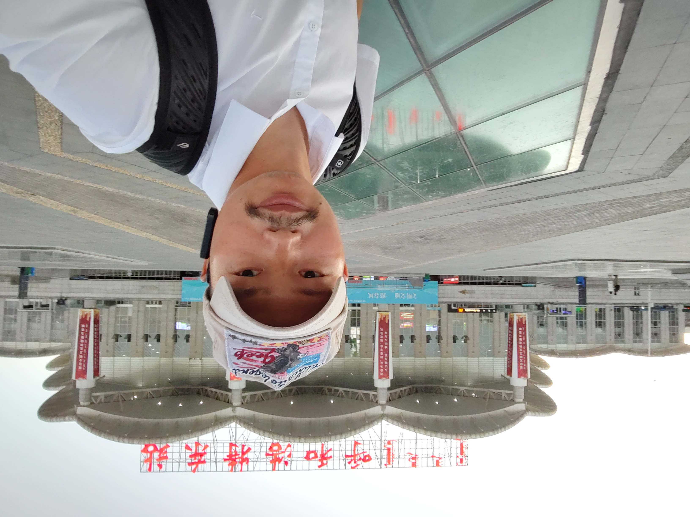

这里将持续收录职业实践与生活旅程中的照片。照片上传后，将按时间、场景与主题逐步呈现。
01 · WORK
工作现场
项目调研、现场改善、方案评审、培训辅导与成果交付。


02 · TEAM
团队同行
团队建设、项目协同、集体活动与并肩作战的珍贵瞬间。
照片待上传后续在此呈现团队活动影像
03 · JOURNEY
出差足迹
跨区域项目、客户走访、工厂考察与沿途城市记录。





04 · LIFE
生活远方
业余旅行、自然风光与工作之外值得珍藏的生活片段。
照片待上传后续在此呈现旅行生活影像